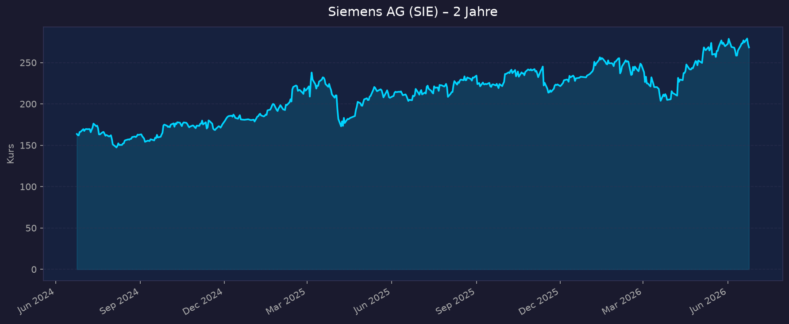
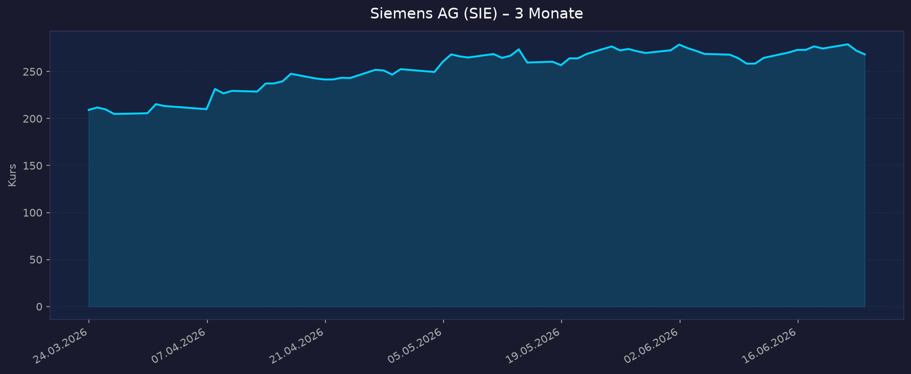

📈 1. Kursentwicklung
Aktueller Kurs: €268,30 | 52W-Hoch: €280,20 | 52W-Tief: €198,00 | Abstand vom Hoch: −4,2 %
Chart – 2 Jahre

Chart – 3 Monate

| Zeitraum | Kurs Start | Kurs Ende | Veränderung |
|---|---|---|---|
| 52 Wochen (Juni 2025 → Juni 2026) | ~€198,00 (52W-Tief) | €268,30 | +35,5 % |
| 3 Monate (März 2026 → Juni 2026) | ~€230 | €268,30 | ~+17 % |
| 52-Wochen-Hoch | — | €280,20 | — |
| 52-Wochen-Tief | — | €198,00 | — |
💡 Kontext: Siemens ist aktuell nur −4,2 % unter dem 52W-Hoch — sehr nahe an neuen Allzeithochs. Treiber: Orderbuch-Rekord (Book-to-bill 1,22), Digital Industries-Erholung, starkes FCF. Als Qualitäts-DAX-Titel mit 1,97 % Dividende ist Siemens gut positioniert.
💹 2. KGV-Entwicklung (Kurs-Gewinn-Verhältnis)
Aktuelles KGV (GAAP TTM): 27,8x | Forward PE (FY2027E): 21,0x
| Zeitraum | KGV (pre-PPA) | Einordnung |
|---|---|---|
| Aktuell GAAP TTM | 27,8x | Moderat für Industrials-Leader |
| Forward PE FY2027E | 21,0x | Günstig für Siemens-Qualität |
| Historisch | ~15–22x | Siemens handelt oft mit Premium |
| FY2026E EPS pre-PPA | €10,70–11,10 | Guidance-Midpoint €10,90 → PE 24,6x |
Bewertung: Das Forward PE von 21x auf FY2027E-Basis ist für Siemens als führendes Industrie-Automatisierungs- und Digitalisierungsunternehmen moderat. Die Guidance von €10,70–11,10 EPS pre-PPA (FY2026E) gibt solide Visibility. Digital Industries erholt sich mit dem Automatisierungs-Superzyklus.
💰 3. Sales Multiple (Kurs-Umsatz-Verhältnis / P/S)
Aktuelles P/S-Verhältnis: 2,57x
| Zeitraum | P/S Ratio | Einordnung |
|---|---|---|
| Aktuell (Juni 2026) | 2,57x | Moderat für diversifizierten Industrials-Konzern |
| Historisch | ~1,5–2,5x | P/S am oberen Ende der historischen Spanne |
| Vergleich ABB / Schneider | ~2–3x | Peer-Bereich fair |
Trend: P/S moderat erhöht — reflektiert die Software-Transformation (Siemens Industrial Metaverse, Xcelerator-Plattform) die höhere Multiples rechtfertigt.
📊 4. Handelsvolumen (Trading Volume)
| Zeitraum | Ø Tagesvolumen | Auffälligkeiten |
|---|---|---|
| 3-Monats-Durchschnitt | ~2–3 Mio. Aktien (XETRA) | Hohe Liquidität für DAX-Titel |
| Beta | 1,29 | Moderate Marktsensitivität |
🏦 5. Insider Trades
| Datum | Name | Funktion | Kauf/Verkauf | Anmerkung |
|---|---|---|---|---|
| Laufend | Roland Busch | CEO | Planmäßige Verkäufe | Equity-Comp-Diversifikation |
| 2026 | Aufsichtsrat | Verschiedene | Planmäßige Transaktionen | Standard |
Einschätzung: Standardmäßige Transaktionen. CEO Roland Busch hat Siemens strategisch zur Technologie-Company transformiert (Spin-off Siemens Healthineers, Siemens Energy abgespaltet). Keine besonderen Warnsignale.
🩳 6. Short-Positionen
Aktuelle Short Quote: ~0,5–1,5 % (Schätzung)
Einschätzung: Gering. Siemens als DAX-Qualitätstitel mit starken Fundamentals hat wenige Bären. Mögliche Short-Thesen: China-Exposure (Digital Industries hat hohen China-Umsatzanteil) und Macro-Verlangsamung.
🗞️ 7. Aktuelle Nachrichten
| Datum | Quelle | Nachricht | Relevanz |
|---|---|---|---|
| Mai 2026 | Siemens IR | Q2 FY2026: Revenue €19,8 Mrd. (+6 % comp.), Orders €24,1 Mrd. (+18 % comp.) | 🔴 Hoch |
| Mai 2026 | Siemens IR | Book-to-bill 1,22 — signifikant über 1,0; Orders-Backlog wächst | 🔴 Hoch |
| Mai 2026 | Siemens IR | EPS pre-PPA €2,81, FCF €1,7 Mrd. (+stark YoY) | 🔴 Hoch |
| Mai 2026 | EMR Online | Digital Industries FY2026 Guidance erhöht: +7–10 % (von +5–10 %), Margin 17–19 % | 🔴 Hoch |
| Mai 2026 | Siemens IR | FY2026 EPS Guidance: €10,70–11,10 (pre-PPA) | 🔴 Hoch |
| 2026 | Siemens | Siemens Xcelerator: Industrial Software Platform (TIA Portal, MindSphere) als recurring Revenue | 🔴 Hoch |
| Juni 2026 | Dividende | Dividende €5,20/Aktie (zuletzt, jährlich) — Yield ~1,97 % | 🟡 Mittel |
Sentiment: Positiv bis sehr positiv — Book-to-bill 1,22 ist ein starkes Signal, dass Orders die Revenue übertreffen. Digital Industries erholt sich. Siemens ist operational auf Hochniveau.
📋 8. Letzte 3 Quartalsberichte
Q2 FY2026 (Januar–März 2026, Siemens FY endet September) — Stark
| Kennzahl | Ist | Einordnung |
|---|---|---|
| Umsatz (Revenue) | €19,8 Mrd. | +6 % comparable YoY |
| Orders | €24,1 Mrd. | +18 % comparable YoY — starke Nachfrage |
| Book-to-bill | 1,22 | Exzellent — Backlog wächst |
| EBIT-Marge Industrial | 15,4 % | Solide |
| EPS pre-PPA | €2,81 | |
| EPS | €2,60 | |
| Free Cash Flow | €1,7 Mrd. | Stark steigend YoY |
FY2026 Guidance (bestätigt):
- Revenue: Oberes Ende von 6–8 % Wachstum
- EPS pre-PPA: €10,70–11,10
- Digital Industries: +7–10 % comparable, Marge 17–19 %
Q1 FY2026 (Oktober–Dezember 2025)
| Kennzahl | Ist | Einordnung |
|---|---|---|
| Umsatz (Revenue) | ~€19–20 Mrd. (Schätzung) | Jahresstartquartal |
| Digital Industries | Erholung begann | Software-Wachstum treibt Mix |
| Book-to-bill | >1,0 | Auftragseingang vor Revenue |
Q4 FY2025 (Juli–September 2025, Geschäftsjahresende)
| Kennzahl | Ist | Einordnung |
|---|---|---|
| Umsatz (Revenue) | ~€20–21 Mrd. (Schätzung) | Stärkstes Quartal (Jahresend-Push) |
| FY2025 Gesamt | ~€76–78 Mrd. (Schätzung) | Baseline für FY2026 +6–8 % |
Quellen: Siemens IR Q2 FY2026 Press Release · EMR Online Ergebnisse · Investing.com Q2 Transcript
🌍 9. Marktkontext & Wettbewerb
(via market-research Skill)
Markt / Branche: Industrielle Automatisierung / Digital Industries / Smart Infrastructure
Industrielle Automatisierungs-TAM: $300+ Mrd. global (2026)
Digital Industries (Siemens): SPS, Motion Control, Industrial Software (Mendix, SIMATIC)
| Wettbewerber | Bereich | Stärke | Schwäche |
|---|---|---|---|
| ABB | Industrieautomation | Robotics, Motion | Software schwächer als Siemens |
| Schneider Electric | Energie-Management + Auto. | EcoStruxure-Plattform | Weniger Industrial-Software-Tiefe |
| Rockwell Automation | US-Industrieauto. | US-Manufacturing-Kundenstamm | Kleiner, USA-fokussiert |
| Honeywell | Process Industries | OT-Cybersecurity | Weniger Automation-Tiefe |
| Fanuc | Roboter / CNC | Japan-Leader, Qualität | Weniger Software-/Digital-Stack |
Branchentrends 2026:
- AI-Factory / Industrial AI: Siemens Xcelerator-Plattform integriert AI in SPS, MES, Digital Twin. Industrial AI ermöglicht predictive maintenance, Produktionsoptimierung — Siemens ist Marktführer in Industrial Software (Mendix, MindSphere, Opcenter)
- Reshoring / Nearshoring: Neue Fabriken in Europa und USA benötigen moderne Automatisierungstechnik — direkte Siemens-Nachfrage
- Green-Energy-Infrastruktur: Smart Grid, Gebäudetechnologie für Energieeffizienz (Smart Infrastructure Segment) — EU Green Deal als struktureller Rückenwind
- China-Risiko und -Erholung: China war 2024/2025 ein Bremser für Siemens (Lagerabbau, lokale Wettbewerber). 2026 zeigen Orders-Daten (+18 % YoY) die Wiederbelebung
Marktposition: Siemens ist der weltweit führende Anbieter von Industrie-Automatisierungstechnologie und Industrie-Software (vor ABB, Schneider Electric). Über Siemens Xcelerator entsteht ein Platform-Ecosystem ähnlich wie SAP im ERP-Markt — mit hoher Kundenbindung und wachsendem Software-Revenue-Anteil.
Risiken:
- China-Exposure: Digital Industries hat ~30 % China-Anteil; bei erneuter Schwäche oder geopolitischen Spannungen Risiko
- Automatisierungs-Zyklizität: Wenn Industriekapital-investitionen sinken, fällt Siemens-Revenue überproportional
- Siemens Energy (Abspaltung): Getrennt von SIE, aber Reputationsrisiko bei Problemen
📝 Gesamteinschätzung
Stärken:
- ✅ Book-to-bill 1,22 — Auftragslage hervorragend, Revenue-Visibility für 12–18 Monate gesichert
- ✅ Digital Industries Wachstum erhöht auf +7–10 % (vorher +5–10 %) — Erholung bestätigt
- ✅ Dividende 1,97 % — solide laufende Ausschüttung
- ✅ Siemens Xcelerator: Industrial Software Platform schafft recurring Revenue und Kundenbindung
- ✅ Beta 1,29 — moderat, kein AI-Halbleiter-Volatilitätsniveau
- ✅ FCF stark steigend — finanzielle Stärke für Dividende + Investitionen
Risiken:
- ⚠️ China-Abhängigkeit: Digital Industries ~30 % China — bei Eskalation erhebliches Umsatzrisiko
- ⚠️ Zyklizität: Industrieauto. ist zyklisch; in globaler Rezession fällt Siemens stärker als Defensive-Titel
- ⚠️ Software-Transformation-Risiko: Weg vom Hardware-Verkauf zu SaaS/Platform ist strukturell richtig, aber mit Transitions-Risiken behaftet
- ⚠️ Kurs nahe ATH (−4,2 %): Wenig Spielraum für schlechte Nachrichten kurzfristig
5-Jahres-Szenario-Analyse (FY2031):
Basis: FY2027E EPS ~€12,78 (Forward PE 21,0x bei €268,30); Dividende ~€5,20–5,60/Jahr
| Szenario | Annahme | EPS FY2031E | P/E | Kurs 2031 | Dividende 5J | Gesamt-Return |
|---|---|---|---|---|---|---|
| Bär (China-Krise, Macro-Einbruch, Digital Industries stagniert) | 5 % CAGR | ~€15,53 | 16x | ~€248 | +€27 | +3 % |
| Base (Digital Industries erholt sich, Xcelerator skaliert) | 10 % CAGR | ~€18,72 | 20x | ~€374 | +€28 | +50 % |
| Bull (Siemens AI-Factory-Leader, China-Rebound, Software skaliert) | 14 % CAGR | ~€21,62 | 25x | ~€541 | +€30 | +113 % |
💡 Einordnung (inklusive Dividende):
- Bär +3 % — Kapitalschutz durch Dividende auch im Schlechtszenario
- Base +50 % — attraktives Qualitäts-Investment für 5 Jahre
- Risikoabgesicherter Total-Return durch Dividende (1,97 %) und Book-to-bill 1,22 (kurzfristige Sichtbarkeit)
- Siemens bietet ein ausgeglicheneres Risiko/Rendite-Profil als die meisten AI-Pure-Plays
Fazit: Siemens AG ist der qualitativste Industrials-Titel im analysierten Portfolio: Marktführer in Industrial Automation und Industrial Software, hervorragender Book-to-bill 1,22, Digital Industries klar erholt (+7–10 % Guidance), und Forward PE 21x mit 1,97 % Dividende ist fair bis günstig. China-Risiko und Zyklizität sind die Hauptrisiken, aber das Base-Szenario (+50 % inkl. Dividende über 5 Jahre) ist überzeugend. Siemens eignet sich als europäisches Portfolio-Fundament neben den USA-Tech-Titeln — unterschiedliche Branche, unterschiedliche Währung, defensive Qualität.
Datenquellen: Siemens IR Q2 FY2026 · EMR Online Q2 · Investing.com Q2 Transcript · tEDmag Q2 Ergebnisse · Yahoo Finance
Keine Anlageberatung — rein informative Auswertung öffentlicher Daten